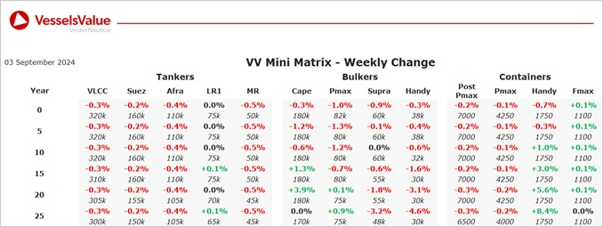

Bulkers:S&P Values for older Capesize increase owing to sales such as Pontotrition and modern Panamax,older Surpamax and Handysize bulkers have all seen values decrease
Capesize BC Pontotrition (177,000 DWT, Jul 2007, Shanghai Waigaoqiao Shipbuilding) sold to Unknown Chinese buyers for USD 23, VV Value USD 22.4 mil
Kamsarmax BC Elsa S (81,000 DWT, Aug 2015, Japan Marine United) sold to Ocean Freighters for USD 31 mil, VV Value USD 32 mil
Supramax BC Sania (57,000 DWT, Oct 2010, Qingshan Shipyard) sold to Undisclosed buyers for USD 12.5 mil, VV Value USD 13.5 mil
Handy BC (Open Hatch) Efficiency OL (37,000 DWT, Sep 2010, Saiki) sold to Undisclosed buyers for USD 15.4 mil, VV Value USD 15.7 mil
Tankers:Tanker values remained stable across the board last week
MR2 (Chem/Prod) Kalamos (46,700 DWT, Jan 2004, Iwagi Zosen) sold to undisclosed buyers for USD 17.8 mil, VV Value USD 17.9 mil
MR2 (Chem/Prod) Elegant Grace (50,700 DWT, Mar 2009, SPP) sold to PV Trans for USD 27.5 mil, VV Value USD 28.41 mil
Containers:Market values for Post Panamax and Panamax marginally depreciated across all ages whilst a minor uptick was observed for Feedermax from resale to twenty years of age.
No notable sales last week
